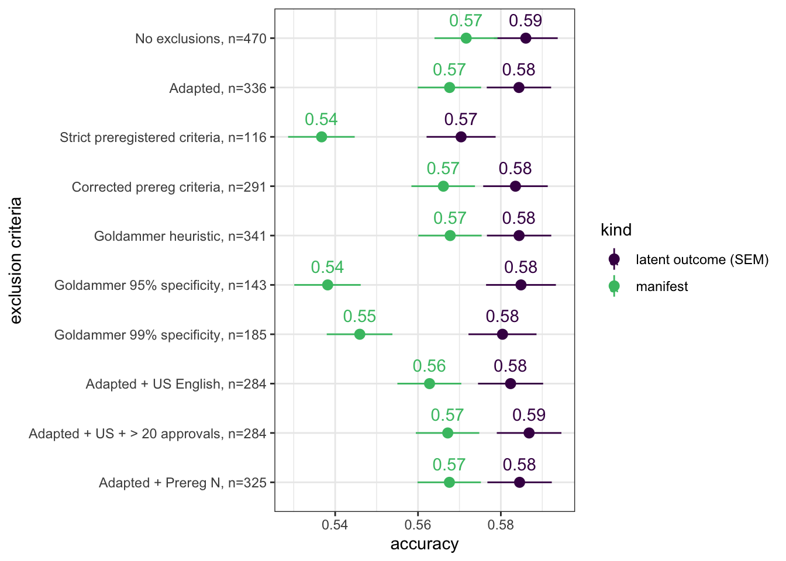
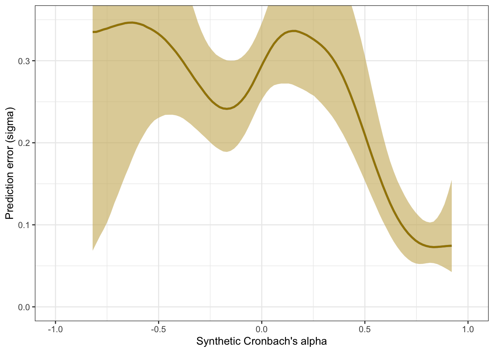

Language models accurately infer correlations between psychological items and scales from text alone
2024-11-06
TODO:
- 78 scales? should be 80 or 81 (manuscript)
Here, we apply the model to the data collected in our Registered Report validation sample on Nov 1, 2024.
knitr::opts_chunk$set(echo = TRUE, error = T, message = F, warning = F)
# Libraries and Settings
# Libs ---------------------------
library(knitr)
library(tidyverse)
library(arrow)
library(glue)
library(psych)
library(lavaan)
library(ggplot2)
library(plotly)
library(gridExtra)
library(broom)
library(broom.mixed)
library(brms)
library(tidybayes)
library(cmdstanr)
library(cowplot)
options(mc.cores = parallel::detectCores(),
brms.backend = "cmdstanr",
brms.file_refit = "on_change")
model_name = "ItemSimilarityTraining-20240502-trial12"
#model_name = "item-similarity-20231018-122504"
pretrained_model_name = "all-mpnet-base-v2"
data_path = glue("./")
pretrained_data_path = glue("./")
set.seed(42)
rr_validation <- arrow::read_feather(file = file.path(data_path, glue("ignore.{model_name}.raw.validation-study-2024-11-01.item_correlations.feather")))
pt_rr_validation <- arrow::read_feather(file = file.path(data_path, glue("ignore.{pretrained_model_name}.raw.validation-study-2024-11-01.item_correlations.feather")))
rr_validation_mapping_data = arrow::read_feather(
file = file.path(data_path, glue("{model_name}.raw.validation-study-2024-11-01.mapping2.feather"))
) %>%
rename(scale_0 = scale0,
scale_1 = scale1)
rr_validation_human_data = arrow::read_feather(
file = file.path(data_path, glue("{model_name}.raw.validation-study-2024-11-01.human.feather"))
)
rr_validation_scales <- arrow::read_feather(file.path(data_path, glue("{model_name}.raw.validation-study-2024-11-01.scales.feather"))
)
N <- rr_validation_human_data %>% summarise_all(~ sum(!is.na(.))) %>% min()
total_N <- nrow(rr_validation_human_data)The Bainbridge data was collected on N=387 respondents. The item with the most missing values still had n=276.
Synthetic inter-item correlations
rr_validation_llm <- rr_validation %>%
left_join(rr_validation_mapping_data %>% select(variable_1 = variable, InstrumentA = instrument, ScaleA = scale_0, SubscaleA = scale_1)) %>%
left_join(rr_validation_mapping_data %>% select(variable_2 = variable, InstrumentB = instrument, ScaleB = scale_0, SubscaleB = scale_1))
pt_rr_validation_llm <- pt_rr_validation %>%
left_join(rr_validation_mapping_data %>% select(variable_1 = variable, InstrumentA = instrument, ScaleA = scale_0, SubscaleA = scale_1)) %>%
left_join(rr_validation_mapping_data %>% select(variable_2 = variable, InstrumentB = instrument, ScaleB = scale_0, SubscaleB = scale_1))Accuracy
se2 <- mean(rr_validation_llm$empirical_r_se^2)
r <- broom::tidy(cor.test(rr_validation_llm$empirical_r, rr_validation_llm$synthetic_r))
pt_r <- broom::tidy(cor.test(pt_rr_validation_llm$empirical_r, pt_rr_validation_llm$synthetic_r))
model <- paste0('
# Latent variables
PearsonLatent =~ 1*empirical_r
# Fixing error variances based on known standard errors
empirical_r ~~ ',se2,'*empirical_r
# Relationship between latent variables
PearsonLatent ~~ synthetic_r
')
fit <- sem(model, data = rr_validation_llm)
pt_fit <- sem(model, data = pt_rr_validation_llm)
m_synth_r_items <- brm(
bf(empirical_r | mi(empirical_r_se) ~ synthetic_r + (1|mm(variable_1, variable_2)),
sigma ~ poly(synthetic_r, degree = 3)), data = rr_validation_llm,
file = "ignore/m_synth_rr_r_items_lm")
sd_synth <- sd(m_synth_r_items$data$synthetic_r)
newdata <- m_synth_r_items$data %>% select(empirical_r, synthetic_r, empirical_r_se)
epreds <- epred_draws(newdata = newdata, obj = m_synth_r_items, re_formula = NA, ndraws = 200)
preds <- predicted_draws(newdata = newdata, obj = m_synth_r_items, re_formula = NA, ndraws = 200)
epred_preds <- epreds %>% left_join(preds)
by_draw <- epred_preds %>% group_by(.draw) %>%
summarise(.epred = var(.epred),
.prediction = var(.prediction),
sigma = sqrt(.prediction - .epred),
semi_latent_r = sqrt(.epred/.prediction))
rm(epred_preds)
accuracy_bayes_items <- by_draw %>% mean_hdci(semi_latent_r)
bind_rows(
pt_r %>%
mutate(model = "pre-trained", kind = "manifest") %>%
select(model, kind, accuracy = estimate, conf.low, conf.high),
standardizedsolution(pt_fit) %>%
filter(lhs == "PearsonLatent", rhs == "synthetic_r") %>%
mutate(model = "pre-trained", kind = "semi-latent (SEM)") %>%
select(model, kind, accuracy = est.std,
conf.low = ci.lower, conf.high = ci.upper),
r %>%
mutate(model = "fine-tuned", kind = "manifest") %>%
select(model, kind, accuracy = estimate, conf.low, conf.high),
standardizedsolution(fit) %>%
filter(lhs == "PearsonLatent", rhs == "synthetic_r") %>%
mutate(model = "fine-tuned", kind = "semi-latent (SEM)") %>%
select(model, kind, accuracy = est.std,
conf.low = ci.lower, conf.high = ci.upper),
accuracy_bayes_items %>%
mutate(model = "fine-tuned", kind = "semi-latent (Bayesian EIV)") %>%
select(model, kind, accuracy = semi_latent_r, conf.low = .lower, conf.high = .upper)
) %>%
knitr::kable(digits = 2)| model | kind | accuracy | conf.low | conf.high |
|---|---|---|---|---|
| pre-trained | manifest | 0.30 | 0.29 | 0.31 |
| pre-trained | semi-latent (SEM) | 0.31 | 0.30 | 0.32 |
| fine-tuned | manifest | 0.57 | 0.56 | 0.58 |
| fine-tuned | semi-latent (SEM) | 0.59 | 0.58 | 0.59 |
| fine-tuned | semi-latent (Bayesian EIV) | 0.59 | 0.58 | 0.61 |
Prediction error plot according to synthetic estimate
## Family: gaussian
## Links: mu = identity; sigma = log
## Formula: empirical_r | mi(empirical_r_se) ~ synthetic_r + (1 | mm(variable_1, variable_2))
## sigma ~ poly(synthetic_r, degree = 3)
## Data: rr_validation_llm (Number of observations: 30135)
## Draws: 4 chains, each with iter = 2000; warmup = 1000; thin = 1;
## total post-warmup draws = 4000
##
## Multilevel Hyperparameters:
## ~mmvariable_1variable_2 (Number of levels: 246)
## Estimate Est.Error l-95% CI u-95% CI Rhat Bulk_ESS Tail_ESS
## sd(Intercept) 0.09 0.00 0.08 0.09 1.02 349 786
##
## Regression Coefficients:
## Estimate Est.Error l-95% CI u-95% CI Rhat
## Intercept -0.00 0.01 -0.01 0.01 1.02
## sigma_Intercept -1.81 0.00 -1.82 -1.80 1.00
## synthetic_r 0.97 0.01 0.95 0.99 1.00
## sigma_polysynthetic_rdegreeEQ31 27.11 0.99 25.13 28.97 1.00
## sigma_polysynthetic_rdegreeEQ32 1.87 0.87 0.16 3.62 1.00
## sigma_polysynthetic_rdegreeEQ33 -12.19 0.91 -13.95 -10.36 1.00
## Bulk_ESS Tail_ESS
## Intercept 233 455
## sigma_Intercept 4812 3209
## synthetic_r 4454 3172
## sigma_polysynthetic_rdegreeEQ31 2397 2976
## sigma_polysynthetic_rdegreeEQ32 3240 2651
## sigma_polysynthetic_rdegreeEQ33 3487 2917
##
## Draws were sampled using sample(hmc). For each parameter, Bulk_ESS
## and Tail_ESS are effective sample size measures, and Rhat is the potential
## scale reduction factor on split chains (at convergence, Rhat = 1).## # A tibble: 1 × 6
## sigma .lower .upper .width .point .interval
## <dbl> <dbl> <dbl> <dbl> <chr> <chr>
## 1 0.170 0.166 0.173 0.95 mean hdciplot(conditional_effects(m_synth_r_items, dpar = "sigma"), plot = F)[[1]] +
theme_bw() +
ylab("Prediction error (sigma)")
Scatter plot
ggplot(rr_validation_llm, aes(synthetic_r, empirical_r,
ymin = empirical_r - empirical_r_se,
ymax = empirical_r + empirical_r_se)) +
geom_abline(linetype = "dashed") +
geom_point(color = "#00A0B0", alpha = 0.1, size = 1) +
geom_smooth(aes(
x = synthetic_r,
y = estimate__,
ymin = lower__,
ymax = upper__,
), stat = "identity",
color = "#a48500",
fill = "#EDC951",
data = as.data.frame(pred$synthetic_r)) +
xlab("Synthetic inter-item correlation") +
ylab("Empirical inter-item correlation") +
theme_bw() +
coord_fixed(xlim = c(-1,1), ylim = c(-1,1)) -> plot_items
plot_items
Interactive plot
This plot shows only 2000 randomly selected item pairs to conserve memory. A full interactive plot exists, but may react slowly.
item_pair_table <- rr_validation_llm %>%
left_join(rr_validation_mapping_data %>% select(variable_1 = variable,
item_text_1 = item_text)) %>%
left_join(rr_validation_mapping_data %>% select(variable_2 = variable,
item_text_2 = item_text))
# item_pair_table %>% filter(str_length(item_text_1) < 30, str_length(item_text_2) < 30) %>%
# left_join(pt_rr_validation_llm %>% rename(synthetic_r_pt = synthetic_r)) %>%
# select(item_text_1, item_text_2, empirical_r, synthetic_r, synthetic_r_pt) %>% View()
rio::export(item_pair_table, "ignore/item_pair_table_rr_unrounded.xlsx")
rio::export(item_pair_table, "ignore/item_pair_table_rr.feather")
(item_pair_table %>%
mutate(synthetic_r = round(synthetic_r, 2),
empirical_r = round(empirical_r, 2),
items = str_replace_all(str_c(item_text_1, "\n", item_text_2),
"_+", " ")) %>%
sample_n(2000) %>%
ggplot(., aes(synthetic_r, empirical_r,
# ymin = empirical_r - empirical_r_se,
# ymax = empirical_r + empirical_r_se,
label = items)) +
geom_abline(linetype = "dashed") +
geom_point(color = "#00A0B0", alpha = 0.3, size = 1) +
xlab("Synthetic inter-item correlation") +
ylab("Empirical inter-item correlation") +
theme_bw() +
coord_fixed(xlim = c(-1,1), ylim = c(-1,1))) %>%
ggplotly()item_pair_table <- item_pair_table %>%
mutate(empirical_r = sprintf("%.2f±%.3f", empirical_r,
empirical_r_se),
synthetic_r = sprintf("%.2f", synthetic_r)) %>%
select(item_text_1, item_text_2, empirical_r, synthetic_r)
rio::export(item_pair_table, "item_pair_table_rr.xlsx")
Robustness checks
Accuracy by subject matter
Both items from same subject matter
instruments <- rio::import("rr_used_measures.xlsx") %>% as_tibble()
rr_validation_llm_domain <- rr_validation_llm %>%
left_join(instruments %>% select(InstrumentA = Measure, DomainA = Domain), by = "InstrumentA") %>%
left_join(instruments %>% select(InstrumentB = Measure, DomainB = Domain), by = "InstrumentB")
rr_validation_llm_domain %>%
filter(DomainA == DomainB) %>%
group_by(DomainA) %>%
summarise(broom::tidy(cor.test(synthetic_r, empirical_r)), sd_emp_r = sd(empirical_r), n = n()) %>%
select(instrument = DomainA, r = estimate, conf.low, conf.high, n, sd_emp_r) %>%
arrange(r) %>%
kable(digits = 2)| instrument | r | conf.low | conf.high | n | sd_emp_r |
|---|---|---|---|---|---|
| attitudes | 0.34 | 0.23 | 0.43 | 300 | 0.23 |
| personality | 0.42 | 0.37 | 0.47 | 1035 | 0.21 |
| clinical | 0.50 | 0.48 | 0.52 | 5050 | 0.28 |
| social | 0.72 | 0.69 | 0.74 | 1081 | 0.27 |
| occupational | 0.75 | 0.70 | 0.79 | 351 | 0.40 |
Accuracy by instrument
rr_validation_llm %>%
filter(InstrumentA == InstrumentB) %>%
group_by(InstrumentA) %>%
summarise(broom::tidy(cor.test(synthetic_r, empirical_r)), sd_emp_r = sd(empirical_r), n = n()) %>%
select(instrument = InstrumentA, r = estimate, conf.low, conf.high, n, sd_emp_r) %>%
arrange(r) %>%
kable(digits = 2)| instrument | r | conf.low | conf.high | n | sd_emp_r |
|---|---|---|---|---|---|
| New Ecological Paradigm Scale | 0.02 | -0.28 | 0.31 | 45 | 0.39 |
| Moral Foundations Questionnaire | 0.03 | -0.23 | 0.30 | 55 | 0.20 |
| HEXACO-60 | 0.35 | 0.27 | 0.43 | 435 | 0.20 |
| Fear of COVID-19 Scale | 0.39 | -0.05 | 0.70 | 21 | 0.07 |
| Perseverative Thinking Questionnaire | 0.45 | 0.28 | 0.59 | 105 | 0.09 |
| Authoritarianism Short Scale | 0.47 | 0.17 | 0.69 | 36 | 0.10 |
| Perceived Stress Scale | 0.50 | 0.33 | 0.64 | 91 | 0.50 |
| Chronotype Questionnaire | 0.57 | 0.44 | 0.68 | 120 | 0.38 |
| Survey Attitude Scale | 0.58 | 0.31 | 0.76 | 36 | 0.39 |
| Disgust Avoidance Questionnaire | 0.62 | 0.50 | 0.71 | 136 | 0.06 |
| Work Gratitude Scale | 0.64 | 0.43 | 0.79 | 45 | 0.10 |
| Revised Adult Attachment Scale | 0.71 | 0.55 | 0.82 | 55 | 0.49 |
| Obsessive–Compulsive Inventory (Revised) | 0.71 | 0.62 | 0.78 | 153 | 0.11 |
| Utrecht Work Engagement Scale (Short Version) | 0.79 | 0.62 | 0.89 | 36 | 0.12 |
| Perth Alexithymia Questionnaire | 0.80 | 0.67 | 0.89 | 45 | 0.14 |
| Oldenburg Burnout Inventory (English Translation) | 0.84 | 0.68 | 0.92 | 28 | 0.54 |
| Attitudes Toward AI in Defense Scale | 0.86 | 0.63 | 0.95 | 15 | 0.39 |
| Center for Epidemiological Studies Depression Scale | 0.87 | 0.84 | 0.90 | 190 | 0.50 |
| UCLA Loneliness Scale (Short Form) | 0.93 | 0.85 | 0.97 | 28 | 0.55 |
| Positive and Negative Affect Schedule | 0.94 | 0.87 | 0.97 | 28 | 0.51 |
Is the accuracy lower within/across scales and instruments?
rr_validation_llm %>%
mutate(same_instrument = if_else(InstrumentA == InstrumentB, 1, 0,0),
same_scale = if_else(ScaleA == ScaleB, 1,0,0),
same_subscale = if_else(same_scale & SubscaleA == SubscaleB, 1,0,0)) %>%
group_by(same_scale, same_instrument, same_subscale) %>%
summarise(broom::tidy(cor.test(synthetic_r, empirical_r)), sd_emp_r = sd(empirical_r), n = n()) %>%
select(same_instrument, same_scale, same_subscale, r = estimate, conf.low, conf.high, n, sd_emp_r) %>%
arrange(same_instrument, same_scale, same_subscale) %>%
kable()| same_instrument | same_scale | same_subscale | r | conf.low | conf.high | n | sd_emp_r |
|---|---|---|---|---|---|---|---|
| 0 | 0 | 0 | 0.5502430 | 0.5420863 | 0.5582959 | 28432 | 0.2011995 |
| 1 | 0 | 0 | 0.3661930 | 0.2968451 | 0.4316987 | 635 | 0.3134805 |
| 1 | 1 | 0 | 0.6158180 | 0.5631821 | 0.6634768 | 592 | 0.3701843 |
| 1 | 1 | 1 | 0.5666598 | 0.5023690 | 0.6247194 | 476 | 0.4910011 |
Is the accuracy lower for items that have low variance?
item_variances <- rr_validation_human_data %>%
haven::zap_labels() %>%
summarise_all(~ sd(., na.rm = T)) %>%
pivot_longer(everything(), names_to = "variable", values_to = "item_sd")
by_max_cov <- rr_validation_llm %>%
left_join(item_variances, by = c("variable_1" = "variable")) %>%
left_join(item_variances, by = c("variable_2" = "variable"), suffix = c("_1", "_2")) %>%
mutate(max_covariance = ceiling((item_sd_1 * item_sd_2)*10)/10)
rs_by_max_cov <- by_max_cov %>%
group_by(max_covariance) %>%
filter(n() > 3) %>%
summarise(broom::tidy(cor.test(synthetic_r, empirical_r)), sd_emp_r = sd(empirical_r), n = n()) %>%
select(max_covariance, r = estimate, conf.low, conf.high, n, sd_emp_r) %>%
arrange(max_covariance)
rs_by_max_cov%>%
kable()| max_covariance | r | conf.low | conf.high | n | sd_emp_r |
|---|---|---|---|---|---|
| 0.8 | 0.7078042 | 0.3067710 | 0.8954083 | 15 | 0.2780594 |
| 0.9 | 0.4835693 | 0.0655704 | 0.7571919 | 21 | 0.1808821 |
| 1.0 | 0.6258632 | 0.4301955 | 0.7653631 | 54 | 0.1953257 |
| 1.1 | 0.3923985 | 0.2314419 | 0.5324449 | 123 | 0.1469641 |
| 1.2 | 0.4377541 | 0.3136282 | 0.5471706 | 186 | 0.1337755 |
| 1.3 | 0.3453580 | 0.2359109 | 0.4461533 | 271 | 0.1281583 |
| 1.4 | 0.6312833 | 0.5595847 | 0.6936027 | 313 | 0.1310839 |
| 1.5 | 0.3496081 | 0.2600202 | 0.4332285 | 396 | 0.1134906 |
| 1.6 | 0.4119852 | 0.3305825 | 0.4873034 | 433 | 0.1333989 |
| 1.7 | 0.3526264 | 0.2756623 | 0.4250983 | 529 | 0.1550571 |
| 1.8 | 0.5076182 | 0.4486368 | 0.5621970 | 659 | 0.2037436 |
| 1.9 | 0.6038245 | 0.5620020 | 0.6425673 | 959 | 0.1712590 |
| 2.0 | 0.5818266 | 0.5437224 | 0.6175371 | 1237 | 0.1751795 |
| 2.1 | 0.5587054 | 0.5231694 | 0.5923019 | 1524 | 0.1519208 |
| 2.2 | 0.5029769 | 0.4682587 | 0.5361444 | 1863 | 0.1564611 |
| 2.3 | 0.5920459 | 0.5634940 | 0.6191851 | 2093 | 0.1769253 |
| 2.4 | 0.5709429 | 0.5429716 | 0.5976487 | 2338 | 0.2017433 |
| 2.5 | 0.5779660 | 0.5507822 | 0.6039250 | 2416 | 0.2250136 |
| 2.6 | 0.5800815 | 0.5532890 | 0.6056751 | 2468 | 0.2351531 |
| 2.7 | 0.5309897 | 0.5019678 | 0.5588172 | 2454 | 0.2452393 |
| 2.8 | 0.5626317 | 0.5337433 | 0.5902086 | 2254 | 0.2593592 |
| 2.9 | 0.5774317 | 0.5466153 | 0.6066863 | 1895 | 0.2691260 |
| 3.0 | 0.5845651 | 0.5519470 | 0.6153970 | 1657 | 0.2612764 |
| 3.1 | 0.6507524 | 0.6185268 | 0.6807925 | 1321 | 0.2667059 |
| 3.2 | 0.6365140 | 0.5978191 | 0.6722496 | 985 | 0.2556525 |
| 3.3 | 0.6834982 | 0.6416547 | 0.7212852 | 692 | 0.2544023 |
| 3.4 | 0.6357691 | 0.5762635 | 0.6885693 | 436 | 0.2426924 |
| 3.5 | 0.5870829 | 0.4988164 | 0.6632964 | 247 | 0.2491166 |
| 3.6 | 0.6145900 | 0.5031375 | 0.7059333 | 148 | 0.2434530 |
| 3.7 | 0.6558459 | 0.5038889 | 0.7684260 | 75 | 0.2636062 |
| 3.8 | 0.3927465 | 0.0835537 | 0.6329590 | 38 | 0.2333568 |
| 3.9 | 0.3930026 | -0.1275514 | 0.7438048 | 16 | 0.2376546 |
| 4.0 | -0.1797604 | -0.7037477 | 0.4708927 | 11 | 0.1653886 |
rs_by_max_cov %>% ggplot(aes(max_covariance, r, ymin = conf.low, ymax = conf.high)) +
geom_pointrange()
by_max_cov%>%
filter(max_covariance > 1.8) %>%
summarise(broom::tidy(cor.test(synthetic_r, empirical_r)), sd_emp_r = sd(empirical_r), n = n()) %>%
kable()| estimate | statistic | p.value | parameter | conf.low | conf.high | method | alternative | sd_emp_r | n |
|---|---|---|---|---|---|---|---|---|---|
| 0.5792933 | 117.054 | 0 | 27128 | 0.5713322 | 0.5871454 | Pearson’s product-moment correlation | two.sided | 0.2274087 | 27130 |
rr_validation_llm %>%
left_join(item_variances, by = c("variable_1" = "variable")) %>%
left_join(item_variances, by = c("variable_2" = "variable"), suffix = c("_1", "_2")) %>%
mutate(max_covariance = ceiling((item_sd_1 * item_sd_2)*10)/10) %>%
filter(max_covariance > 1) %>%
summarise(broom::tidy(cor.test(synthetic_r, empirical_r)), sd_emp_r = sd(empirical_r), n = n()) %>%
select(r = estimate, conf.low, conf.high, n, sd_emp_r) %>%
knitr::kable(digits = 2)| r | conf.low | conf.high | n | sd_emp_r |
|---|---|---|---|---|
| 0.57 | 0.56 | 0.58 | 30040 | 0.22 |
Is the accuracy lower for the pre-trained model?
ggplot(pt_rr_validation_llm, aes(synthetic_r, empirical_r,
ymin = empirical_r - empirical_r_se,
ymax = empirical_r + empirical_r_se)) +
geom_abline(linetype = "dashed") +
geom_point(color = "#00A0B0", alpha = 0.1, size = 1) +
xlab("Synthetic inter-item correlation") +
ylab("Empirical inter-item correlation") +
theme_bw() +
coord_fixed(xlim = c(-1,1), ylim = c(-1,1)) -> pt_plot_items
pt_plot_items
Full table of synthetic and empirical item pair correlations
Synthetic Reliabilities
cors_llm <- rr_validation_llm %>%
select(x = variable_1, y = variable_2, r = synthetic_r) %>%
as.data.frame() |>
igraph::graph_from_data_frame(directed = FALSE) |>
igraph::as_adjacency_matrix(attr = "r", sparse = FALSE)
diag(cors_llm) <- 1
pt_cors_llm <- pt_rr_validation_llm %>%
select(x = variable_1, y = variable_2, r = synthetic_r) %>%
as.data.frame() |>
igraph::graph_from_data_frame(directed = FALSE) |>
igraph::as_adjacency_matrix(attr = "r", sparse = FALSE)
diag(pt_cors_llm) <- 1
cors_real <- rr_validation_llm %>%
select(x = variable_1, y = variable_2, r = empirical_r) %>%
as.data.frame() |>
igraph::graph_from_data_frame(directed = FALSE) |>
igraph::as_adjacency_matrix(attr = "r", sparse = FALSE)
diag(cors_real) <- 1
mapping_data <- rr_validation_mapping_data
items_by_scale <- bind_rows(
rr_validation_scales %>% select(-keyed) %>% filter(scale_1 == "") %>% left_join(mapping_data %>% select(-scale_1), by = c("instrument", "scale_0")),
rr_validation_scales %>% select(-keyed) %>% filter(scale_1 != "") %>% left_join(mapping_data, by = c("instrument", "scale_0", "scale_1"))
)
scales <- items_by_scale %>%
group_by(scale) %>%
summarise(
items = list(variable),
reverse_items = list(variable[keyed == -1]),
number_of_items = n_distinct(variable),
keyed = first(keyed),
lvn = paste(first(scale), " =~ ", paste(variable, collapse = " + "))) %>%
drop_na() %>%
ungroup()
random_scales <- list()
for(i in 1:200) {
n_items <- rpois(1, mean(scales$number_of_items))
n_items <- if_else(n_items < 3, 3, n_items)
random_scales[[i]] <- rr_validation_mapping_data %>%
sample_n(n_items) %>%
mutate(scale = paste0("random", i)) %>%
group_by(scale) %>%
summarise(
items = list(variable),
number_of_items = n_distinct(variable),
lvn = paste(first(scale), " =~ ", paste(variable, collapse = " + "))) %>%
drop_na() %>%
mutate(keyed = 1)
}
random_scales <- bind_rows(random_scales)
real_scales <- scales
scales <- bind_rows(real = real_scales, random = random_scales, .id = "type")
source("global_functions.R")
scales <- scales %>% filter(number_of_items >= 3)
scales <- scales %>%
rowwise() %>%
mutate(r_real = list(cors_real[items, items]),
pt_r_llm = list(pt_cors_llm[items, items]),
r_llm = list(cors_llm[items, items])) %>%
mutate(reverse_items_by_1st = list(find_reverse_items_by_first_item(r_real, keyed)),
reverse_items = if_else(length(reverse_items) == 0, list(reverse_items_by_1st), list(reverse_items)),
r_real_rev = list(reverse_items(r_real, reverse_items)),
pt_r_llm_rev = list(reverse_items(pt_r_llm, reverse_items)),
r_llm_rev = list(reverse_items(r_llm, reverse_items))) %>%
mutate(
rel_real = list(psych::alpha(r_real_rev, keys = F, n.obs = N)$feldt),
rel_llm = list(psych::alpha(r_llm_rev, keys = F, n.obs = N)$feldt),
rel_pt_llm = list(psych::alpha(pt_r_llm_rev, keys = F, n.obs = N)$feldt)) %>%
mutate(empirical_alpha = rel_real$alpha$raw_alpha,
synthetic_alpha = rel_llm$alpha$raw_alpha,
pt_synthetic_alpha = rel_pt_llm$alpha$raw_alpha) %>%
mutate(
empirical_alpha_se = mean(diff(unlist(psychometric::alpha.CI(empirical_alpha, k = number_of_items, N = N, level = 0.95))))
)
scales <- scales %>% filter(empirical_alpha > 0)
# qplot(scales$empirical_alpha_se)
# qplot(scales$empirical_alpha, scales$empirical_alpha_se)
# qplot(scales$number_of_items, scales$empirical_alpha_se)
# qplot(scales$empirical_alpha, scales$empirical_alpha_se, color = scales$number_of_items)Accuracy
se2 <- mean(scales$empirical_alpha_se^2)
r <- broom::tidy(cor.test(scales$empirical_alpha, scales$synthetic_alpha))
pt_r <- broom::tidy(cor.test(scales$empirical_alpha, scales$pt_synthetic_alpha))
model <- paste0('
# Latent variables
latent_real_rel =~ 1*empirical_alpha
# Fixing error variances based on known standard errors
empirical_alpha ~~ ',se2,'*empirical_alpha
# Relationship between latent variables
latent_real_rel ~~ synthetic_alpha
')
fit <- sem(model, data = scales)
pt_fit <- sem(model, data = scales %>%
select(empirical_alpha, synthetic_alpha = pt_synthetic_alpha))
m_lmsynth_rel_scales <- brm(
bf(empirical_alpha | mi(empirical_alpha_se) ~ synthetic_alpha,
sigma ~ poly(synthetic_alpha, degree = 3)), data = scales,
file = "ignore/m_synth_rr_rel_lm")
newdata <- m_lmsynth_rel_scales$data %>% select(empirical_alpha, synthetic_alpha, empirical_alpha_se)
epreds <- epred_draws(newdata = newdata, obj = m_lmsynth_rel_scales, re_formula = NA)
preds <- predicted_draws(newdata = newdata, obj = m_lmsynth_rel_scales, re_formula = NA)
epred_preds <- epreds %>% left_join(preds)
by_draw <- epred_preds %>% group_by(.draw) %>%
summarise(.epred = var(.epred),
.prediction = var(.prediction),
sigma = sqrt(.prediction - .epred),
semi_latent_r = sqrt(.epred/.prediction))
accuracy_bayes_rels <- by_draw %>% mean_hdci(semi_latent_r)
bind_rows(
pt_r %>%
mutate(model = "pre-trained", kind = "manifest") %>%
select(model, kind, accuracy = estimate, conf.low, conf.high),
standardizedsolution(pt_fit) %>%
filter(lhs == "latent_real_rel", rhs == "synthetic_alpha") %>%
mutate(model = "pre-trained", kind = "semi-latent (SEM)") %>%
select(model, kind, accuracy = est.std,
conf.low = ci.lower, conf.high = ci.upper),
r %>%
mutate(model = "fine-tuned", kind = "manifest") %>%
select(model, kind, accuracy = estimate, conf.low, conf.high),
standardizedsolution(fit) %>%
filter(lhs == "latent_real_rel", rhs == "synthetic_alpha") %>%
mutate(model = "fine-tuned", kind = "semi-latent (SEM)") %>%
select(model, kind, accuracy = est.std,
conf.low = ci.lower, conf.high = ci.upper),
accuracy_bayes_rels %>%
mutate(model = "fine-tuned", kind = "semi-latent (Bayesian EIV)") %>%
select(model, kind, accuracy = semi_latent_r, conf.low = .lower, conf.high = .upper)
) %>%
knitr::kable(digits = 2)| model | kind | accuracy | conf.low | conf.high |
|---|---|---|---|---|
| pre-trained | manifest | 0.31 | 0.19 | 0.42 |
| pre-trained | semi-latent (SEM) | 0.34 | 0.21 | 0.46 |
| fine-tuned | manifest | 0.76 | 0.71 | 0.81 |
| fine-tuned | semi-latent (SEM) | 0.85 | 0.79 | 0.90 |
| fine-tuned | semi-latent (Bayesian EIV) | 0.81 | 0.75 | 0.87 |
Prediction error plot according to synthetic estimate
## Family: gaussian
## Links: mu = identity; sigma = log
## Formula: empirical_alpha | mi(empirical_alpha_se) ~ synthetic_alpha
## sigma ~ poly(synthetic_alpha, degree = 3)
## Data: scales (Number of observations: 245)
## Draws: 4 chains, each with iter = 2000; warmup = 1000; thin = 1;
## total post-warmup draws = 4000
##
## Regression Coefficients:
## Estimate Est.Error l-95% CI u-95% CI Rhat
## Intercept 0.37 0.02 0.33 0.40 1.00
## sigma_Intercept -2.18 0.07 -2.31 -2.05 1.00
## synthetic_alpha 0.67 0.02 0.62 0.71 1.00
## sigma_polysynthetic_alphadegreeEQ31 -6.44 1.11 -8.52 -4.19 1.00
## sigma_polysynthetic_alphadegreeEQ32 -5.03 1.26 -7.65 -2.69 1.00
## sigma_polysynthetic_alphadegreeEQ33 -0.05 1.21 -2.29 2.40 1.00
## Bulk_ESS Tail_ESS
## Intercept 1786 2315
## sigma_Intercept 1597 2298
## synthetic_alpha 1924 2303
## sigma_polysynthetic_alphadegreeEQ31 1499 2700
## sigma_polysynthetic_alphadegreeEQ32 1136 1649
## sigma_polysynthetic_alphadegreeEQ33 1484 1820
##
## Draws were sampled using sample(hmc). For each parameter, Bulk_ESS
## and Tail_ESS are effective sample size measures, and Rhat is the potential
## scale reduction factor on split chains (at convergence, Rhat = 1).pred <- conditional_effects(m_lmsynth_rel_scales, method = "predict")
by_draw %>%
filter(!is.nan(sigma)) %>% mean_hdci(sigma)## # A tibble: 1 × 6
## sigma .lower .upper .width .point .interval
## <dbl> <dbl> <dbl> <dbl> <chr> <chr>
## 1 0.133 0.104 0.163 0.95 mean hdciplot(conditional_effects(m_lmsynth_rel_scales, dpar = "sigma"), plot = F)[[1]] +
theme_bw() +
scale_x_continuous(limits = c(0,1))+
scale_y_continuous(limits = c(0,0.13)) +
ylab("Prediction error (sigma)")
Scatter plot
ggplot(scales, aes(synthetic_alpha, empirical_alpha,
color = str_detect(scale, "^random"),
ymin = empirical_alpha - empirical_alpha_se,
ymax = empirical_alpha + empirical_alpha_se)) +
geom_abline(linetype = "dashed") +
geom_point(alpha = 0.6, size = 1) +
geom_smooth(aes(
x = synthetic_alpha,
y = estimate__,
ymin = lower__,
ymax = upper__,
), stat = "identity",
color = "#a48500",
fill = "#EDC951",
data = as.data.frame(pred$synthetic_alpha)) +
scale_color_manual(values = c("#00A0B0", "#6A4A3C"),
guide = "none") +
xlab("Synthetic Cronbach's alpha") +
ylab("Empirical Cronbach's alpha") +
theme_bw() +
coord_fixed(xlim = c(0,1), ylim = c(0,1)) -> plot_rels
plot_rels
Interactive plot
(scales %>%
filter(!str_detect(scale, "^random")) %>%
mutate(synthetic_alpha = round(synthetic_alpha, 2),
empirical_alpha = round(empirical_alpha, 2),
scale = str_replace_all(scale, "_+", " ")) %>%
ggplot(., aes(synthetic_alpha, empirical_alpha,
# ymin = empirical_r - empirical_r_se,
# ymax = empirical_r + empirical_r_se,
label = scale)) +
geom_abline(linetype = "dashed") +
geom_point(alpha = 0.3, size = 1, color = "#00A0B0") +
xlab("Synthetic Cronbach's alpha") +
ylab("Empirical Cronbach's alpha") +
theme_bw() +
theme(legend.position='none') +
coord_fixed(xlim = c(NA,1), ylim = c(NA,1))) %>%
ggplotly()
Table
scales %>%
filter(type != "random") %>%
mutate(empirical_alpha = sprintf("%.2f±%.3f", empirical_alpha,
empirical_alpha_se),
synthetic_alpha = sprintf("%.2f", synthetic_alpha),
scale = str_replace_all(scale, "_+", " ")
) %>%
select(scale, empirical_alpha, synthetic_alpha, number_of_items) %>%
DT::datatable(rownames = FALSE,
filter = "top")## # A tibble: 1 × 2
## `mean(empirical_alpha)` `sd(empirical_alpha)`
## <dbl> <dbl>
## 1 0.507 0.251scales %>% group_by(type) %>%
summarise(mean(empirical_alpha), sd(empirical_alpha),
cor = broom::tidy(cor.test(synthetic_alpha, empirical_alpha)), n())## # A tibble: 2 × 5
## type `mean(empirical_alpha)` `sd(empirical_alpha)` cor$estimate `n()`
## <chr> <dbl> <dbl> <dbl> <int>
## 1 random 0.410 0.191 0.592 190
## 2 real 0.839 0.103 0.651 55
## # ℹ 7 more variables: cor$statistic <dbl>, $p.value <dbl>, $parameter <int>,
## # $conf.low <dbl>, $conf.high <dbl>, $method <chr>, $alternative <chr>## # A tibble: 1 × 1
## unrestricted
## <dbl>
## 1 0.888
Robustness checks
scales %>%
group_by(str_detect(scale, "^random")) %>%
summarise(broom::tidy(cor.test(synthetic_alpha, empirical_alpha)), sd_alpha = sd(empirical_alpha), n = n()) %>%
knitr::kable(digits = 2)| str_detect(scale, “^random”) | estimate | statistic | p.value | parameter | conf.low | conf.high | method | alternative | sd_alpha | n |
|---|---|---|---|---|---|---|---|---|---|---|
| FALSE | 0.65 | 6.25 | 0 | 53 | 0.47 | 0.78 | Pearson’s product-moment correlation | two.sided | 0.10 | 55 |
| TRUE | 0.59 | 10.08 | 0 | 188 | 0.49 | 0.68 | Pearson’s product-moment correlation | two.sided | 0.19 | 190 |
Although the number of items alone can of course predict Cronbach’s alpha, the synthetic alphas explain much more variance in empirical alphas.
scales %>%
ungroup() %>%
summarise(broom::tidy(cor.test(number_of_items, empirical_alpha)), sd_alpha = sd(empirical_alpha), n = n()) %>%
knitr::kable(digits = 2)| estimate | statistic | p.value | parameter | conf.low | conf.high | method | alternative | sd_alpha | n |
|---|---|---|---|---|---|---|---|---|---|
| 0.35 | 5.75 | 0 | 243 | 0.23 | 0.45 | Pearson’s product-moment correlation | two.sided | 0.25 | 245 |
##
## Call:
## lm(formula = empirical_alpha ~ number_of_items, data = scales)
##
## Residuals:
## Min 1Q Median 3Q Max
## -0.52654 -0.17061 -0.02007 0.14132 0.49219
##
## Coefficients:
## Estimate Std. Error t value Pr(>|t|)
## (Intercept) 0.328054 0.034523 9.502 < 2e-16 ***
## number_of_items 0.033991 0.005915 5.747 2.71e-08 ***
## ---
## Signif. codes: 0 '***' 0.001 '**' 0.01 '*' 0.05 '.' 0.1 ' ' 1
##
## Residual standard error: 0.2356 on 243 degrees of freedom
## Multiple R-squared: 0.1196, Adjusted R-squared: 0.116
## F-statistic: 33.03 on 1 and 243 DF, p-value: 2.712e-08##
## Call:
## lm(formula = empirical_alpha ~ number_of_items + synthetic_alpha,
## data = scales)
##
## Residuals:
## Min 1Q Median 3Q Max
## -0.44712 -0.10811 -0.00535 0.10790 0.50200
##
## Coefficients:
## Estimate Std. Error t value Pr(>|t|)
## (Intercept) 0.260339 0.023663 11.002 < 2e-16 ***
## number_of_items 0.013180 0.004179 3.154 0.00181 **
## synthetic_alpha 0.650105 0.038160 17.036 < 2e-16 ***
## ---
## Signif. codes: 0 '***' 0.001 '**' 0.01 '*' 0.05 '.' 0.1 ' ' 1
##
## Residual standard error: 0.1592 on 242 degrees of freedom
## Multiple R-squared: 0.5997, Adjusted R-squared: 0.5964
## F-statistic: 181.3 on 2 and 242 DF, p-value: < 2.2e-16Is the accuracy lower for the pre-trained model?
ggplot(scales, aes(pt_synthetic_alpha, empirical_alpha,
color = str_detect(scale, "^random"),
ymin = empirical_alpha - empirical_alpha_se,
ymax = empirical_alpha + empirical_alpha_se)) +
geom_abline(linetype = "dashed") +
geom_point(alpha = 0.6, size = 1) +
scale_color_manual(values = c("#00A0B0", "#6A4A3C"),
guide = "none") +
xlab("Synthetic Cronbach's alpha") +
ylab("Empirical Cronbach's alpha") +
theme_bw() +
coord_fixed(xlim = c(0,1), ylim = c(0,1)) -> pt_plot_rels
pt_plot_rels
Synthetic Scale Correlations
manifest_scores = arrow::read_feather(file = file.path(data_path, glue("ignore.{model_name}.raw.validation-study-2024-11-01.scale_correlations.feather")))
pt_manifest_scores = arrow::read_feather(file = file.path(data_path, glue("ignore.{pretrained_model_name}.raw.validation-study-2024-11-01.scale_correlations.feather")))
n_distinct(manifest_scores$scale_a)## [1] 78manifest_scores <- manifest_scores %>%
left_join(scales, by = c("scale_a" = "scale")) %>%
left_join(scales, by = c("scale_b" = "scale"))Accuracy
r <- broom::tidy(cor.test(manifest_scores$empirical_r, manifest_scores$synthetic_r))
pt_r <- broom::tidy(cor.test(pt_manifest_scores$empirical_r, pt_manifest_scores$synthetic_r))
se2 <- mean(manifest_scores$empirical_r_se^2)
model <- paste0('
# Latent variables
PearsonLatent =~ 1*empirical_r
# Fixing error variances based on known standard errors
empirical_r ~~ ',se2,'*empirical_r
# Relationship between latent variables
PearsonLatent ~~ synthetic_r
')
fit <- sem(model, data = manifest_scores)
pt_fit <- sem(model, data = pt_manifest_scores)
m_lmsynth_r_scales <- brm(
bf(empirical_r | mi(empirical_r_se) ~ synthetic_r + (1|mm(scale_a, scale_b)),
sigma ~ poly(synthetic_r, degree = 3)), data = manifest_scores,
file = "ignore/m_synth_rr_r_scales_lm8")
sd_synth <- sd(m_lmsynth_r_scales$data$synthetic_r)
newdata <- m_lmsynth_r_scales$data %>% select(empirical_r, synthetic_r, empirical_r_se)
epreds <- epred_draws(newdata = newdata, obj = m_lmsynth_r_scales, re_formula = NA)
preds <- predicted_draws(newdata = newdata, obj = m_lmsynth_r_scales, re_formula = NA)
epred_preds <- epreds %>% left_join(preds)
by_draw <- epred_preds %>% group_by(.draw) %>%
summarise(.epred = var(.epred),
.prediction = var(.prediction),
sigma = sqrt(.prediction - .epred),
semi_latent_r = sqrt(.epred/.prediction))
accuracy_bayes_scales <- by_draw %>% mean_hdci(semi_latent_r)
bind_rows(
pt_r %>%
mutate(model = "pre-trained", kind = "manifest") %>%
select(model, kind, accuracy = estimate, conf.low, conf.high),
standardizedsolution(pt_fit) %>%
filter(lhs == "PearsonLatent", rhs == "synthetic_r") %>%
mutate(model = "pre-trained", kind = "semi-latent (SEM)") %>%
select(model, kind, accuracy = est.std,
conf.low = ci.lower, conf.high = ci.upper),
r %>%
mutate(model = "fine-tuned", kind = "manifest") %>%
select(model, kind, accuracy = estimate, conf.low, conf.high),
standardizedsolution(fit) %>%
filter(lhs == "PearsonLatent", rhs == "synthetic_r") %>%
mutate(model = "fine-tuned", kind = "semi-latent (SEM)") %>%
select(model, kind, accuracy = est.std,
conf.low = ci.lower, conf.high = ci.upper),
accuracy_bayes_scales %>%
mutate(model = "fine-tuned", kind = "semi-latent (Bayesian EIV)") %>%
select(model, kind, accuracy = semi_latent_r, conf.low = .lower, conf.high = .upper)
) %>%
knitr::kable(digits = 2)| model | kind | accuracy | conf.low | conf.high |
|---|---|---|---|---|
| pre-trained | manifest | 0.46 | 0.43 | 0.48 |
| pre-trained | semi-latent (SEM) | 0.46 | 0.44 | 0.49 |
| fine-tuned | manifest | 0.74 | 0.72 | 0.76 |
| fine-tuned | semi-latent (SEM) | 0.75 | 0.74 | 0.77 |
| fine-tuned | semi-latent (Bayesian EIV) | 0.76 | 0.74 | 0.78 |
Prediction error plot according to synthetic estimate
## Family: gaussian
## Links: mu = identity; sigma = log
## Formula: empirical_r | mi(empirical_r_se) ~ synthetic_r + (1 | mm(scale_a, scale_b))
## sigma ~ poly(synthetic_r, degree = 3)
## Data: manifest_scores (Number of observations: 3119)
## Draws: 4 chains, each with iter = 2000; warmup = 1000; thin = 1;
## total post-warmup draws = 4000
##
## Multilevel Hyperparameters:
## ~mmscale_ascale_b (Number of levels: 80)
## Estimate Est.Error l-95% CI u-95% CI Rhat Bulk_ESS Tail_ESS
## sd(Intercept) 0.04 0.01 0.03 0.06 1.00 1490 2468
##
## Regression Coefficients:
## Estimate Est.Error l-95% CI u-95% CI Rhat
## Intercept -0.00 0.01 -0.01 0.01 1.00
## sigma_Intercept -1.81 0.01 -1.84 -1.78 1.00
## synthetic_r 1.10 0.02 1.07 1.13 1.00
## sigma_polysynthetic_rdegreeEQ31 3.78 0.97 1.95 5.71 1.00
## sigma_polysynthetic_rdegreeEQ32 -3.14 0.92 -4.92 -1.28 1.00
## sigma_polysynthetic_rdegreeEQ33 -0.38 1.01 -2.40 1.54 1.00
## Bulk_ESS Tail_ESS
## Intercept 5862 3395
## sigma_Intercept 5991 3161
## synthetic_r 7839 3689
## sigma_polysynthetic_rdegreeEQ31 4843 3385
## sigma_polysynthetic_rdegreeEQ32 6768 3539
## sigma_polysynthetic_rdegreeEQ33 6063 3401
##
## Draws were sampled using sample(hmc). For each parameter, Bulk_ESS
## and Tail_ESS are effective sample size measures, and Rhat is the potential
## scale reduction factor on split chains (at convergence, Rhat = 1).## # A tibble: 1 × 6
## sigma .lower .upper .width .point .interval
## <dbl> <dbl> <dbl> <dbl> <chr> <chr>
## 1 0.165 0.156 0.174 0.95 mean hdcipred <- conditional_effects(m_lmsynth_r_scales, method = "predict")
plot(conditional_effects(m_lmsynth_r_scales, dpar = "sigma"), plot = F)[[1]] +
theme_bw() +
ylab("Prediction error (sigma)")
Scatter plot
ggplot(manifest_scores, aes(synthetic_r, empirical_r,
ymin = empirical_r - empirical_r_se,
ymax = empirical_r + empirical_r_se)) +
geom_abline(linetype = "dashed") +
geom_point(color = "#00A0B0", alpha = 0.3, size = 1) +
geom_smooth(aes(
x = synthetic_r,
y = estimate__,
ymin = lower__,
ymax = upper__,
), stat = "identity",
color = "#a48500",
fill = "#EDC951",
data = as.data.frame(pred$synthetic_r)) +
xlab("Synthetic inter-scale correlation") +
ylab("Empirical inter-scale correlation") +
theme_bw() +
coord_fixed(xlim = c(-1,1), ylim = c(-1,1)) -> plot_scales
plot_scales
Interactive plot
(manifest_scores %>%
mutate(synthetic_r = round(synthetic_r, 2),
empirical_r = round(empirical_r, 2),
scales = str_replace_all(str_c(scale_a, "\n", scale_b),
"_+", " ")) %>%
ggplot(., aes(synthetic_r, empirical_r,
# ymin = empirical_r - empirical_r_se,
# ymax = empirical_r + empirical_r_se,
label = scales)) +
geom_abline(linetype = "dashed") +
geom_point(color = "#00A0B0", alpha = 0.3, size = 1) +
xlab("Synthetic inter-scale correlation") +
ylab("Empirical inter-scale correlation") +
theme_bw() +
coord_fixed(xlim = c(-1,1), ylim = c(-1,1))) %>%
ggplotly()
Table
manifest_scores %>%
mutate(empirical_r = sprintf("%.2f±%.3f", empirical_r,
empirical_r_se),
synthetic_r = sprintf("%.2f", synthetic_r),
scale_a = str_replace_all(scale_a, "_+", " "),
scale_b = str_replace_all(scale_b, "_+", " ")
) %>%
select(scale_a, scale_b, empirical_r, synthetic_r) %>%
DT::datatable(rownames = FALSE,
filter = "top")
Robustness checks
How does number of items across the two scales relate to accuracy?
by_item_number <- manifest_scores %>%
mutate(items = number_of_items.x + number_of_items.y) %>%
group_by(items) %>%
summarise(broom::tidy(cor.test(empirical_r, synthetic_r)), pairwise_n = n()) ## Error in `summarise()`:
## ℹ In argument: `broom::tidy(cor.test(empirical_r, synthetic_r))`.
## ℹ In group 26: `items = 32`.
## Caused by error in `cor.test.default()`:
## ! not enough finite observationsby_item_number %>%
ggplot(aes(items, estimate, ymin = conf.low, ymax = conf.high)) +
geom_pointrange() +
scale_y_continuous("Manifest accuracy (with 95% confidence interval)") +
xlab("Number of items summed across scales")## Error: object 'by_item_number' not foundlm(estimate ~ items, by_item_number, weights = 1/(by_item_number$conf.high-by_item_number$conf.low))## Error in eval(mf, parent.frame()): object 'by_item_number' not foundmanifest_scores %>%
filter(number_of_items.x >= 10, number_of_items.y >= 10) %>%
summarise(cor = cor(empirical_r, synthetic_r), n())## # A tibble: 1 × 2
## cor `n()`
## <dbl> <int>
## 1 0.858 36Is the accuracy lower for the pre-trained model?
ggplot(pt_manifest_scores, aes(synthetic_r, empirical_r,
ymin = empirical_r - empirical_r_se,
ymax = empirical_r + empirical_r_se)) +
geom_abline(linetype = "dashed") +
geom_point(color = "#00A0B0", alpha = 0.3, size = 1) +
xlab("Synthetic inter-scale correlation") +
ylab("Empirical inter-scale correlation") +
theme_bw() +
coord_fixed(xlim = c(-1,1), ylim = c(-1,1)) -> pt_plot_scales
pt_plot_scales
Combined plot
library(patchwork)
pt_plot_items2 <- pt_plot_items +
annotate("text", size = 2.5, x = -.1, y = 0.5, vjust = 1, hjust = 1, label = "r(I felt fearful,\nI felt that people dislike me)", color = "#00A0B0") +
annotate("segment", x = -.1, y = 0.5, xend = 0.5369071, yend = 0.5875796, color = "#00A0B0", alpha = 0.7) +
annotate("text", size = 2.5, x = 0, y = -0.8, hjust = 0, label = "r(I find it difficult to allow myself to depend on others,\nI am comfortable depending on others)", color = "#00A0B0") +
annotate("segment", x = 0, y = -0.75, xend = 0.09218573, yend = -0.7020895, color = "#00A0B0", alpha = 0.7)
plot_items2 <- plot_items +
annotate("text", size = 3, x = -1, y = 0.98, vjust = 0, hjust = 0, label = with(accuracy_bayes_items, { sprintf("accuracy = %.2f [%.2f;%.2f]", semi_latent_r, .lower, .upper) })) +
annotate("text", size = 2.5, x = -.1, y = 0.5, vjust = 1, hjust = 1, label = "r(I felt fearful,\nI felt that people dislike me)", color = "#00A0B0") +
annotate("segment", x = -.1, y = 0.5, xend = 0.5369071, yend = 0.5875796, color = "#00A0B0", alpha = 0.7) +
annotate("text", size = 2.5, x = 0, y = -0.8, hjust = 0, label = "r(I find it difficult to allow myself to depend on others,\nI am comfortable depending on others)", color = "#00A0B0") +
annotate("segment", x = 0, y = -0.75, xend = 0.09218573, yend = -0.7020895, color = "#00A0B0", alpha = 0.7)
plot_items2 pt_plot_rels2 <- pt_plot_rels +
annotate("text", size = 2.5, x = 0.61, y = 0.25, hjust = 0, label = "Fear of COVID", color = "#00A0B0") +
annotate("segment", x = 0.7, y = 0.27, xend = 0.89, yend = 0.93, color = "#00A0B0", alpha = 0.7) +
annotate("text", size = 2.5, x = -0.02, y = 0.95, hjust = 0, label = "HEXACO fairness", color = "#00A0B0") +
annotate("segment", x = 0.11, y = 0.93, xend = 0.03, yend = 0.82, color = "#00A0B0", alpha = 0.7)
plot_rels2 <- plot_rels +
annotate("text", size = 3, x = 0, y = .985, vjust = 0, hjust = 0, label = with(accuracy_bayes_rels, { sprintf("accuracy = %.2f [%.2f;%.2f]", semi_latent_r, .lower, .upper) })) +
annotate("text", size = 2.5, x = 0.4, y = 0.1, hjust = 0, label = "randomly formed scales", color = "#6A4A3C") +
annotate("segment", x = 0.395, y = 0.1, xend = 0.39, yend = 0.4864297, color = "#6A4A3C", alpha = 0.7) +
annotate("segment", x = 0.395, y = 0.1, xend = 0.285, yend = 0.2279919, color = "#6A4A3C", alpha = 0.7) +
annotate("segment", x = 0.395, y = 0.1, xend = 0.2, yend = 0.075, color = "#6A4A3C", alpha = 0.7) +
annotate("text", size = 2.5, x = 0.61, y = 0.25, hjust = 0, label = "Fear of COVID", color = "#00A0B0") +
annotate("segment", x = 0.7, y = 0.27, xend = 0.89, yend = 0.93, color = "#00A0B0", alpha = 0.7) +
annotate("text", size = 2.5, x = -0.02, y = 0.9, hjust = 0, label = "HEXACO fairness", color = "#00A0B0") +
annotate("segment", x = 0.11, y = 0.89, xend = 0.03, yend = 0.82, color = "#00A0B0", alpha = 0.7)
pt_plot_scales2 <- pt_plot_scales +
annotate("text", size = 2.5, x = -0.1, y = 0.5, hjust = 1, label = "r(UWES vigor,\nWGS work gratitude)", color = "#00A0B0") +
annotate("segment", x = -.1, y = 0.5, xend = .55, yend = .57, color = "#00A0B0", alpha = 0.7) +
annotate("text", size = 2.5, x = -.1, y = -0.9, hjust = 0, label = "r(CES-D well-being,\nCES-D depressive affect)", color = "#00A0B0") +
annotate("segment", x = -.1, y = -.85, xend = 0.02, yend = -0.76, color = "#00A0B0", alpha = 0.7)
plot_scales2 <- plot_scales +
annotate("text", size = 3, x = -1, y = 0.98, vjust = 0, hjust = 0, label = with(accuracy_bayes_scales, { sprintf("accuracy = %.2f [%.2f;%.2f]", semi_latent_r, .lower, .upper) })) +
annotate("text", size = 2.5, x = -0.1, y = 0.5, hjust = 1, label = "r(UWES vigor,\nWGS work gratitude)", color = "#00A0B0") +
annotate("segment", x = -.1, y = 0.5, xend = .55, yend = .57, color = "#00A0B0", alpha = 0.7) +
annotate("text", size = 2.5, x = -.1, y = -0.9, hjust = 0, label = "r(CES-D well-being,\nCES-D depressive affect)", color = "#00A0B0") +
annotate("segment", x = -.1, y = -.85, xend = 0.02, yend = -0.76, color = "#00A0B0", alpha = 0.7)
(pt_plot_items2+
pt_plot_rels2 + ggtitle("") +
pt_plot_scales2) /
(plot_items2 +
plot_rels2 + ggtitle("SurveyBot 3000") +
plot_scales2) +
plot_annotation(
title = 'Pre-trained model before domain adaptation and fine-tuning'
)
